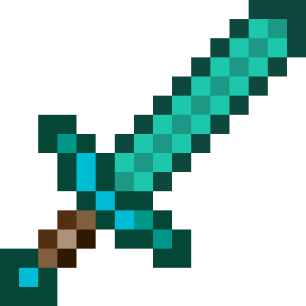

Rzeźnia wieczorową porą, czyli...
Pokwadratowany
(prze)stwór!

 Do wspólnej gry mogą dołączyć
gracze, którzy spełnili jeden z poniższych warunków:
Gracz, który spełnił warunki
dostępowe do serwera, otrzymuje poza możliwością gry ochronę własnej działki:
Do wspólnej gry mogą dołączyć
gracze, którzy spełnili jeden z poniższych warunków:
Gracz, który spełnił warunki
dostępowe do serwera, otrzymuje poza możliwością gry ochronę własnej działki:
Adres serwera: i15.liveserver.pl:24079 Wersja: 1.15.1
Ochrona będzie ustawiona poprzez plugin WorldGuard (przedmioty oraz bloki gracza w tym obszarze będą bezpieczne). Każdy właściciel takiej działki chronionej ma możliwość dopuszczenia innego gracza do używania, swojej bezpiecznej strefy. W takim przypadku powiadamia moderatorów, którzy ustawią odpowiednie uprawnienia. Takie dopuszczenie innego gracza, każdy robi na własną odpowiedzialność. Właściciel kanału zastrzega sobie prawo niedopuszczenia do wspólnej gry użytkownika (pomimo tego, że spełnia jeden z powyższych warunków), bez podania przyczyny. Łamanie regulaminu przez użytkowników kanału twitch oraz serwera Minecraft, będzie skutkowało zablokowaniem dostępu do serwera Minecraft oraz Kanału www.twitch.tv/szeik.